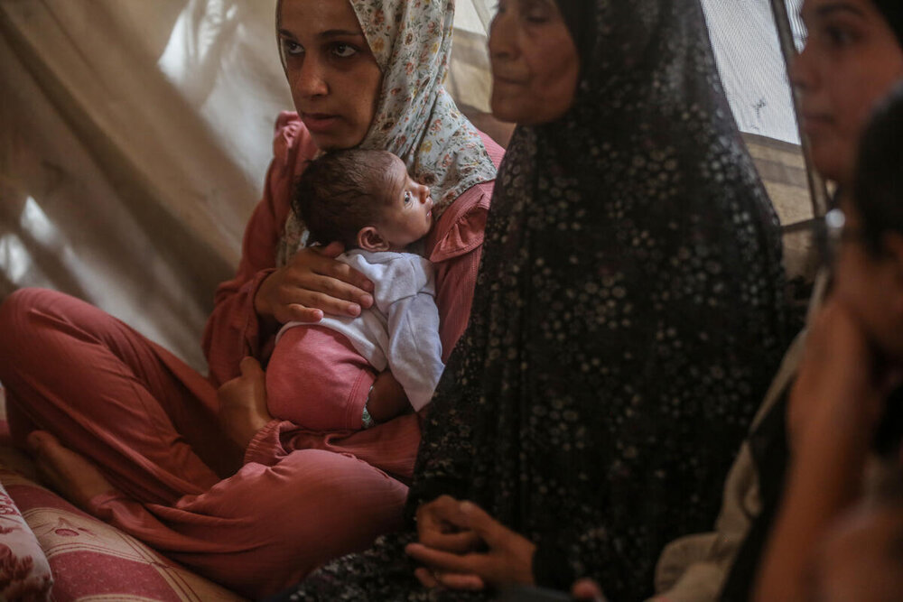
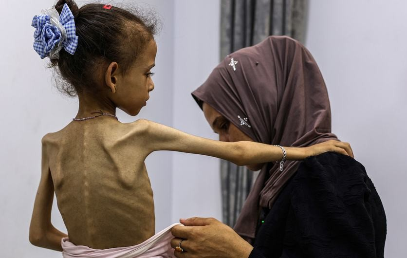
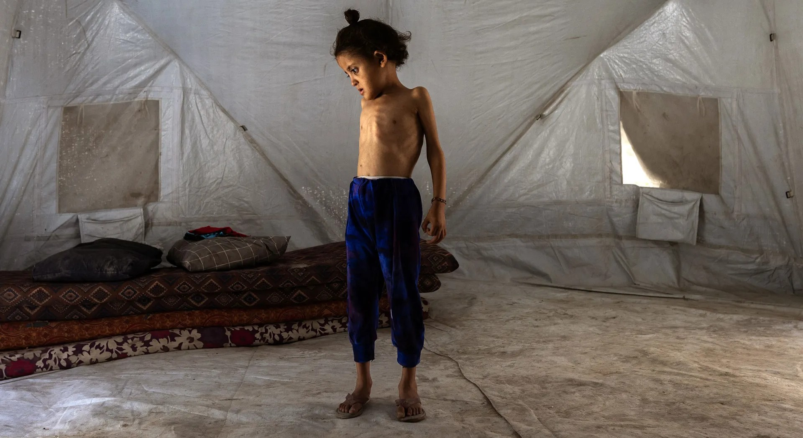

“A Famine classification (IPC Phase 5) is the highest phase of the IPC Acute Food Insecurity scale, and is attributed when an area has at least 20% of households facing an extreme lack of food, at least 30% of children suffering from acute malnutrition, and two people for every 10,000 dying each day due to outright starvation or to the interaction of malnutrition and disease.”
- Integrated Food Security Phase Classifcation

81 percent of households reported poor food consumption in July.
Image credit: World Food Programme

Acute malnutrition rates surpassed famine thresholds in Khan Younis, Deir al Balah and Gaza City.
Image credit: World Health Organization

The third criteria, deaths from malnutrition cannot be demonstrated yet, but out of the 154 malnutrition-related deaths since the start of the conflict, 63 were in July.
Image credits: Saher Alghorra / NYT / Redux